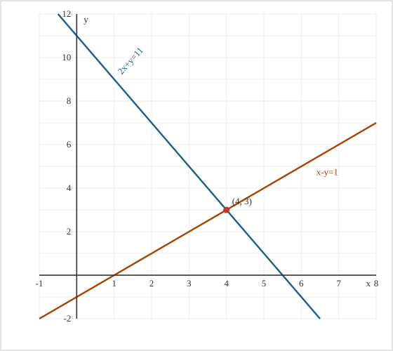

<script>if(location.hostname.endsWith('onrender.com'))location.replace('https://math-sandbox.pages.dev'+location.pathname+location.search+location.hash)</script>
<section class="theory" data-section="IGCSE-14.1">
<h2>14.1 Simultaneous linear equations</h2>
<p class="src">Based on Cambridge IGCSE Mathematics Core and Extended Coursebook, 3rd edition (Karen Morrison and Nick Hamshaw), Chapter 14 Further solving of equations and inequalities, printed pp.428–439 (graphical meeting of two lines, algebraic substitution, and elimination, including Worked examples 3–7 style). Printed pages were read from rendered scans of part_043 (printed 428–439). Own wording and new numbers.</p>
<p class="key-words"><strong>Key words:</strong> <em>simultaneous equations</em>, <em>substitution</em>, <em>elimination</em></p>
<h3>Two equations, one pair of values</h3>
<p><strong>Simultaneous equations</strong> are two (or more) equations that must be satisfied by the same values of the unknowns. For two straight lines, those values are the coordinates of the point where the graphs meet.</p>
<figure><figcaption>The lines \(2x+y=11\) and \(x-y=1\) meet at \((4,3)\).</figcaption></figure>
<p>The same point can be found algebraically, without relying on a graph. Two standard methods are <strong>substitution</strong> and <strong>elimination</strong>.</p>
<div class="worked-example">
<h4>Worked example 1: Substitution</h4>
<p class="src">Book: algebraic substitution style, printed pp.430–432. New numbers (the graph above uses this pair).</p>
<p>Solve the simultaneous equations \(2x+y=11\) and \(x-y=1\).</p>
<ol class="steps">
<li>Rearrange the second equation: \(y=x-1\). <span class="mark">M1</span></li>
<li>Substitute \(y=x-1\) into \(2x+y=11\): \(2x+(x-1)=11\), so \(3x-1=11\), \(3x=12\), \(x=4\). <span class="mark">A1</span></li>
<li>Then \(y=4-1=3\). Check: \(2\times 4+3=11\) and \(4-3=1\). <span class="mark">A1</span></li>
</ol>
<p class="final"><strong>Answer:</strong> \(x=4\), \(y=3\)</p>
</div>
<div class="worked-example">
<h4>Worked example 2: Elimination</h4>
<p class="src">Book: Worked examples 3–6 style (elimination by adding or subtracting), printed pp.431–435. New numbers.</p>
<p>Solve the simultaneous equations \(3x+2y=17\) and \(2x-2y=8\).</p>
<ol class="steps">
<li>The coefficients of \(y\) are \(2\) and \(-2\). Adding the equations eliminates \(y\): \((3x+2y)+(2x-2y)=17+8\), so \(5x=25\), \(x=5\). <span class="mark">M1</span></li>
<li>Substitute \(x=5\) into \(2x-2y=8\): \(10-2y=8\), so \(-2y=-2\), \(y=1\). <span class="mark">A1</span></li>
<li>Check in the first equation: \(3\times 5+2\times 1=17\). <span class="mark">A1</span></li>
</ol>
<p class="final"><strong>Answer:</strong> \(x=5\), \(y=1\)</p>
</div>
<h3>Common mistakes</h3>
<ul>
<li>Adding the equations when the coefficients of one unknown are already the same sign and equal, instead of subtracting (or the other way around).</li>
<li>Finding one unknown and forgetting to find the other, or substituting into an equation that has been rewritten incorrectly.</li>
<li>A sign error when rearranging, especially if a coefficient is negative.</li>
</ul>
<h3>Quick checks</h3>
<div class="quick-check">
<h4>Quick check 1</h4>
<p>Solve the simultaneous equations \(x+y=10\) and \(x-y=4\). What is the value of \(x\)?</p>
<details><summary>Worked solution</summary>
<ol class="steps">
<li>Adding the equations eliminates \(y\): \(2x=14\), so \(x=7\) <span class="mark">A1</span></li>
</ol>
<p class="final"><strong>Answer:</strong> \(7\)</p>
</details>
</div>
<div class="quick-check">
<h4>Quick check 2</h4>
<p>Solve the simultaneous equations \(2x+y=11\) and \(x+y=7\). What is the value of \(y\)?</p>
<details><summary>Worked solution</summary>
<ol class="steps">
<li>Subtracting gives \(x=4\). Then \(4+y=7\), so \(y=3\) <span class="mark">A1</span></li>
</ol>
<p class="final"><strong>Answer:</strong> \(3\)</p>
</details>
</div>
<div class="quick-check">
<h4>Quick check 3</h4>
<p>Solve the simultaneous equations \(4x+y=14\) and \(2x-y=4\). What is the value of \(x\)?</p>
<details><summary>Worked solution</summary>
<ol class="steps">
<li>Adding eliminates \(y\): \(6x=18\), so \(x=3\) <span class="mark">A1</span></li>
</ol>
<p class="final"><strong>Answer:</strong> \(3\)</p>
</details>
</div>
<p class="marks-key"><strong>Marks:</strong> M = method, A = accurate answer (depends on M), B = independent mark. Leave exact values exact.</p>
</section>
